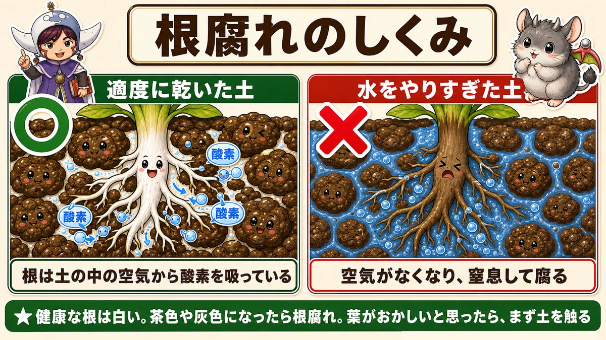
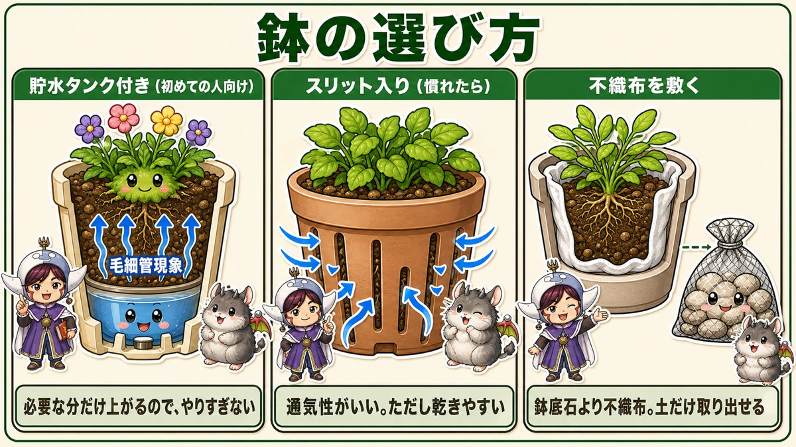
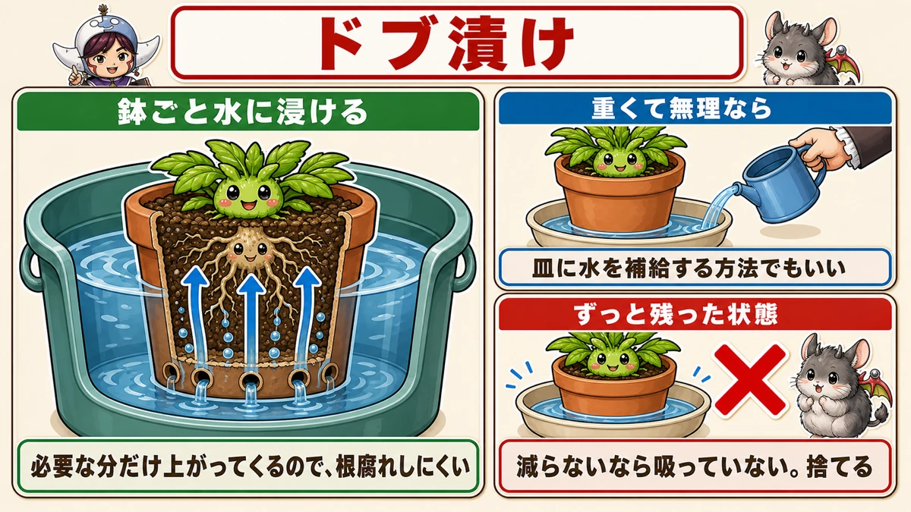
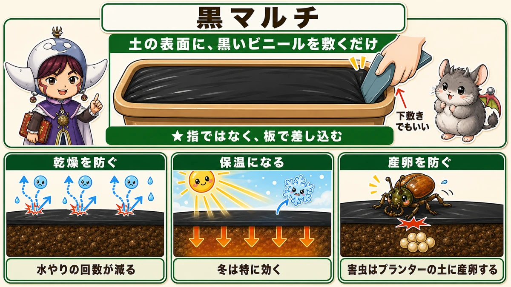
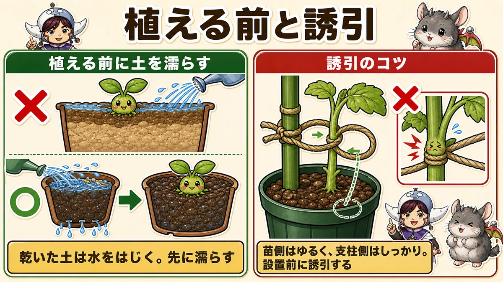
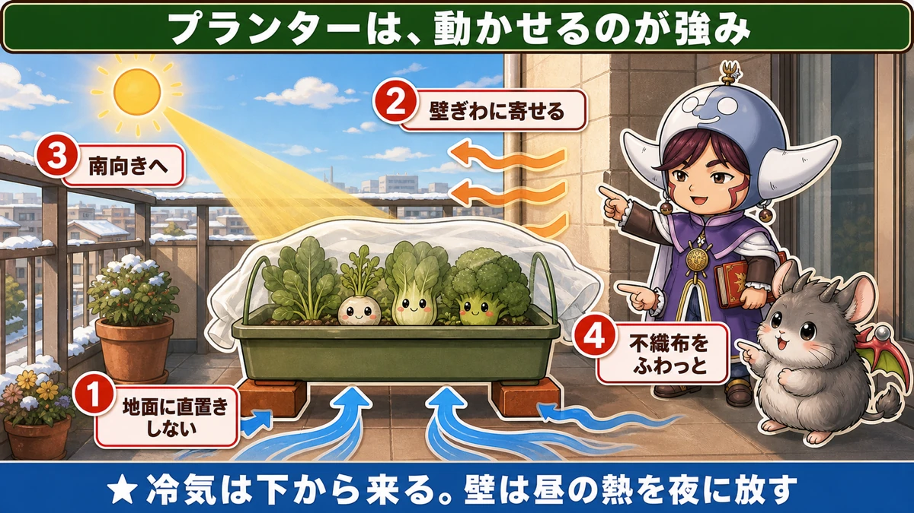
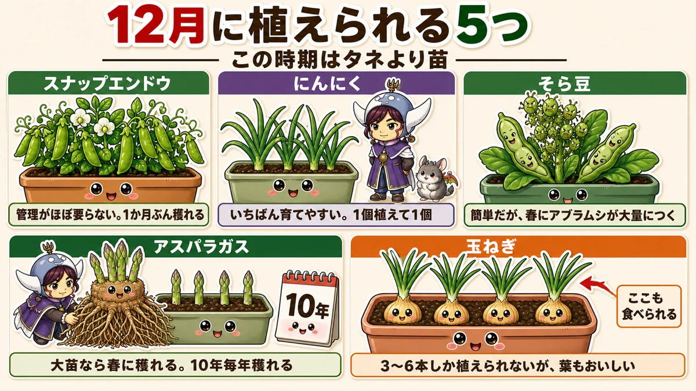
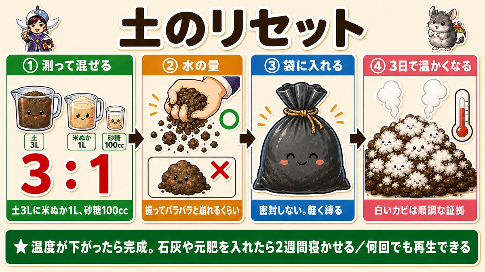

プランターは冬に「水のやりすぎ」で枯れます🪴 12月でも植えられる5つ

🗨️「畑がないから、家庭菜園はあきらめている」
🗨️「プランターで育てると、いつも途中で枯れる」
🗨️「冬にベランダで何か育てられる？」
どうも、8150（えいこう）です🌱 家庭菜園歴8年、理科の教員免許を持っていて、有機・無農薬で野菜を育てています。
今回は、畑を持っていない方に向けた話です。
先に、この記事でいちばん言いたいことを言っておきますね。
プランターで枯れる原因のほとんどは、水のやりすぎです。
しかも冬は、その危険がいちばん高い季節です。
「そんなに水はやっていない」と思われるかもしれません。でも冬は気温が低くて土が乾きません。夏と同じ感覚でやると、確実に多すぎになります。
そしてもうひとつ。プランターは、畑を小さくしたものではありません。まったく別の環境です。そこを分けて考えると、急にうまくいくようになります☺️
📖 この記事の目次
育てる①：枯れる原因は「根が溺れている」

まず、何が起きているかを知ってください。ここが分かると、水やりの回数が自然に減ります。
★根は、土の中から酸素を吸っています。
これ、意外と知られていないと思います。根も呼吸しているんです。
土の粒と粒のあいだには、すき間があります。そこに空気が入っている。根はその空気から酸素をもらっています。
では、毎日水をやるとどうなるか。
すき間が水で埋まって、空気がなくなります。★根は、ずっと水に沈んで溺れているような状態になります。
そして酸素が吸えず、最終的に窒息して腐る。これが根腐れです。
見分け方
★健康な根は、白い色をしています。
根腐れを起こすと、茶色や灰色になり、最終的には溶けます。
根が働かなくなるので、栄養も酸素も水も吸えません。すると葉に影響が出て、変色して、最後は株全体が枯れる。
「葉が変色したから水が足りないんだ」と思ってさらに水をやる。これがいちばんまずいパターンです。
★葉がおかしいと思ったら、まず土を触ってください。湿っていたら、水のやりすぎです。
なぜ冬が危ないのか
夏は暑くてどんどん蒸発します。だから毎日やっても、土は乾きます。
でも冬は違います。気温が低くて、日も短い。一度濡れた土が、なかなか乾きません。
★夏と同じペースで水をやると、土がずっと湿ったままになります。
冬の水やりは、「乾いてから」でいいんです。むしろ「乾いてから、さらに1日待つ」くらいでちょうどいいと思っています。
育てる②：鉢を選ぶところから決まります

道具で解決できる部分は、道具で解決したほうがラクです。
初めてなら、貯水タンク付き
★上から水をやるのではなく、貯水部分に水を入れるタイプです。
すると、毛細管現象（もうさいかんげんしょう）で下から必要な分だけ吸い上がります。
毛細管現象というのは、細いすき間を水が自然に登っていく現象のことです。ティッシュの端を水につけると、上のほうまで濡れていきますよね。あれと同じです。
★必要な分だけ上がってくるので、やりすぎになりません。初めての方には、これがいちばん失敗が少ないと思います。
慣れてきたら、スリット入り
側面に細長い切れ込みが入ったタイプです。★通気性がよく、根腐れの予防になります。
ただし乾きやすいので、水の管理が必要になります。少し上級者向けですね。
土がこぼれるときは、不織布
スリット鉢を使うと、切れ込みから土が流れ出します。
ここで鉢底石を入れる方が多いのですが、★鉢底石は再利用のときに土と仕分けるのが面倒です。
おすすめは、★鉢の中に不織布を敷いてから、その中に土を入れること。
土がこぼれず、あとで土だけを取り出せます。不織布を最初に鉢の内側にぴったり沿わせてから、少しずつ土を入れてならしていくときれいに入ります。
★どうしても鉢底石を使いたい場合は、ネットに入れておいてください。あとで引き上げるだけで済みます。
★育てる③：水やりは「ドブ漬け」が理想です

いちばん確実な水やりの方法をお伝えします。
★プランターごと、水に浸ける。
これだけです。バケツや衣装ケースに水を張って、鉢を沈める。しばらくして引き上げます。
なぜこれがいいのか
上から水をやると、どうしても「どのくらい入ったか」が分かりません。多すぎたり少なすぎたりします。
でも下から吸わせると、★毛細管現象で必要な分だけ上がってきます。それ以上は入りません。
根のまわりに水が滞留しないので、根腐れしにくいわけですね。
重くて持ち上げられない場合
大きなプランターは、水を含むと相当重くなります。無理はしないでください。
- 貯水タンク付きのプランターを使う
- 深めのプラスチックの皿を用意して、そこに水を補給する
どちらでも構いません。ただし★水がずっと残ったままの状態にはしないでください。
皿の水がいつまでも減らないなら、それは吸っていないということです。捨ててください。
育てる④：土に黒マルチを敷く

これは畑ではおなじみですが、プランターでこそ効きます。
土の表面に黒いビニールを敷くだけで、こんなに効果があります。
- ★乾燥を防ぐ（水やりの回数が減る）
- ★保温になる（冬は特に）
- ★害虫の産卵を防ぐ
3つ目が、意外と大事です。
★コガネムシなどは、プランターの土に産卵します。
そして産卵されると、畑よりダメージが大きい。土の量が少ないぶん、根がそこに集中しているからです。幼虫に根を食べられると、あっという間に株全体が弱ります。
土がむき出しでなければ、産みつけられません。それだけで防げます。
きれいに敷くコツ
★平らなプラスチックの板で、鉢のふちにマルチを差し込んでいきます。
下敷きでも構いません。指でやろうとすると、うまく入らずにイライラします。板を使ってください。
苗を植えるときは、マルチに穴を開けます。★勢いよくやると、せっかく敷いたマルチが伸びてしまうので、そっと開けてください。
育てる⑤：植える前に、土を濡らす

小さなことですが、これで活着（かっちゃく／苗が新しい土に根づくこと）が変わります。
★土を入れたら、苗を植える前に、下から水が流れ出すまで濡らしてください。
理由は単純で、土の内部が乾いていると、根が伸びていけないからです。
★苗を植えてから水をやっても、うまく吸収できないことがあります。
乾いた土は、意外と水をはじきます。表面だけ濡れて、中は乾いたまま。そこに根を伸ばそうとしても、うまくいきません。
先に、しっかり湿らせておく。順番の問題です。
ベランダは風が強いので、誘引を先に
支柱を立てるものを育てるなら、ここも押さえてください。
- ★支柱は、ポットの土の外側に差す（根を傷めないため）
- ★麻ひもで誘引するとき、苗側はゆるく、支柱側はしっかり
- ★きつく縛らない。成長にともなって、首が締まる状態になります
そして、いちばん大事なこと。
★設置する前に誘引しておいてください。
ベランダは、地面より風が強いです。建物の間を風が抜けるので、思っている以上に揺すられます。「あとでやろう」と置いておくと、次の朝に倒れています。
育てる⑥：冬の置き場所で、生き残りが変わります

畑と違って、プランターは動かせます。これが最大の強みです。
冬は、この強みを使ってください。
①地面に直置きしない
★冷気は、下から来ます。
コンクリートやタイルに直接置くと、底から冷やされ続けます。土の量が少ないので、あっという間に中まで冷えます。
レンガや、すのこや、木の台。何でもいいので、★数センチ浮かせてください。それだけで底冷えがかなり減ります。
②建物の壁ぎわに寄せる
★壁は、昼のあいだ熱をためています。そして夜、それを少しずつ放します。
だから壁ぎわは、開けた場所より暖かいんです。
ベランダの手すり側ではなく、部屋側の壁に寄せる。これだけで、夜の冷え込みがやわらぎます。
③南向きの場所へ移す
★冬は太陽の高さが低くなります。
つまり、夏に日陰だった場所に日が当たることがあります。逆に、夏に一日中日が当たっていた場所が、冬は建物の影に入ることも。
冬になったら、一度ベランダの日の当たり方を見直してください。半日でも日が当たる場所に移すと、育ちがまるで違います。
④不織布を、ふわっとかける
畑と同じです。★ピンと張らず、ふわっと。
夜だけかけて朝はずす、でも効果があります。
12月でも植えられる、5つ

「もう遅い」と思っている方へ。まだあります。
★この時期はタネより、苗のほうが成功率が高いです。寒くて発芽しにくいので、苗から始めてください。
①スナップエンドウ
いちばんのおすすめです。★植えたあとの管理がほとんど要りません。
直径30cmの大型プランターで、1か月ぶんくらい穫れます。
そして、これが大きいのですが。スナップエンドウは買うと鮮度が落ちやすい野菜です。★穫ってすぐ食べられるというのは、プランターならではの価値です。
②にんにく
★紹介するなかで、いちばん育てやすいです。植えたらそのまま放置でもできるくらい。
ただし、1個植えて1個しか穫れません。たくさん収穫したい方には向きませんが、「失敗したくない」「まず1つ成功させたい」という方には、これ以上ない選択肢だと思います。
③そら豆
管理は簡単です。難点はひとつだけ。
★春になると、アブラムシが大量につきます。
これさえ乗り切れば穫れます。プランターで10〜20本ほど。
④アスパラガス
これは面白い選択です。★3年育った大苗を買ってください。
タネからだと3年かかりますが、大苗なら12月に植えて春に収穫できます。直径30cmのプランターで、春先に3本ほど。
数は少ないですが、★一度植えると10年くらい毎年穫れます。しかも年々増えていく。長い付き合いになる野菜です。
⑤玉ねぎ
正直、プランターだと難しいほうです。40cmのプランターで3〜6本しか植えられません。
ただ、ひとつ知っておいてほしいことがあります。
★玉ねぎは、上の緑の葉の部分も食べられます。しかも、おいしいです。
畑でたくさん作っていると気づかないのですが、プランターで数本だけ育てていると、この葉のありがたさが分かります。
冬の手あきに、土を作り直す

冬は植えるものが少ないので、時間があります。使い終わった土を、作り直しておきましょう。
捨てなくていいんです。何回でも再生できます。
手順
- 残った土の量をざっくり測る（例：3L）
- ★土3Lに対して、米ぬか1L（3対1）
- ★発酵を助けるために、砂糖を100ccほど。種類は何でも構いません
- よく混ぜて、水を加える
- 透明でないビニール袋に入れて、★密封せずに軽く口を縛る
- 暖かい場所に置いておく
水の量のコツ
ここだけ、感覚が要ります。
★握って「バラバラ」と崩れるくらい。
「ボロリ」とかたまりで崩れるなら、水が多すぎです。ぼかし肥を作るときより、水は少なめだと思ってください。
何が起きるか
★3日ほどで、袋の中が温かくなります。
そして★白いカビが、綿菓子のようにわさわさと湧いてきます。
初めて見るとぎょっとしますが、これは順調な証拠です。米ぬかをエサに微生物が増えている状態ですね。
やがて温度が下がったら、完成です。土を足して、底のほうからえぐるように混ぜてください。
★石灰や元肥を入れる場合は、植え付けまで2週間ほど寝かせてください。入れないなら3日ほどで落ち着きます。
袋を密封しないのは、★酸素のある状態で発酵させたいからです。あと、虫が入らないようにする意味もあります。
学ぶ：土のすき間には、空気が入っています🔬
理科の時間です。この記事の全部が、ひとつの話につながります。
土は、粒でできています。そして粒と粒のあいだには、必ずすき間があります。
このすき間が、2つの仕事をしています。
- ★水の通り道
- ★空気の部屋
そして根は、この「空気の部屋」から酸素をもらっています。
水をやりすぎると、何が起きるか
すき間が水でいっぱいになります。空気の部屋がなくなります。
すると根は息ができません。人間が水の中で息を止めているのと同じです。少しの時間なら耐えられますが、ずっとは無理です。
だから根腐れは、「水が多すぎて溶けた」のではなく、★「窒息して死んだ」というほうが正確なんですね。
プランターが畑より難しい理由
畑には、土が無限にあります。多すぎた水は、下へ下へと抜けていきます。
でもプランターは、底が閉じています。土の量も限られています。★逃げ場がありません。
同じ「水をやりすぎる」でも、畑では吸収されて、プランターでは致命傷になる。これが、畑の感覚をそのまま持ち込んではいけない理由です。
お子さんと一緒なら
透明なコップに土を入れて、ゆっくり水を注いでみてください。
★土のすき間から、小さな泡がぷくぷくと出てきます。
あれが、押し出された空気です。「根が吸っていた空気が、いま出ていった」と分かる。水やりの意味が、目で見えます🪴
まとめ
ここまで読んでくださって、ありがとうございます！
プランターは、コツさえつかめば畑より手軽です。ポイントを整理しておきますね。
- ★枯れる原因のほとんどは水のやりすぎ。根は土の中の空気から酸素を吸っていて、水で埋まると窒息する
- ★冬は乾かない。夏と同じペースでやらない。「乾いてから、さらに1日待つ」くらいで
- 初めてなら貯水タンク付き。慣れたらスリット鉢＋不織布。★水やりはドブ漬けが理想
- ★土に黒マルチを敷く。乾燥防止・保温・コガネムシの産卵防止の3つが一度に効く
- ★プランターは地面に直置きしない。壁ぎわに寄せて、南向きへ。冬は日の当たり方が変わる
- 12月でも植えられる ー スナップエンドウ・にんにく・そら豆・アスパラガス（3年大苗）・玉ねぎ。★タネより苗
- 使い終わった土は捨てない。★米ぬかと砂糖で発酵させれば、何回でも再生できる
全部やろうとしなくて大丈夫です。まずはプランターを1つ、レンガの上に載せて壁ぎわに寄せてみてください。それだけで、冬の生き残りが変わります🪴
次回は毎月の定期便、12月号です。「もう遅い」と思われがちな12月に、実はまだ植えられるものをまとめます🍂
給水式菜園プランター 650型
記事で「初めてなら貯水タンク付き」と書いたのがこれです。底のトレーに水をためると、毛細管現象で必要な分だけ吸い上がります。上からやりすぎる心配がないので、冬の根腐れをいちばん確実に防げます。土は約30L入ります。
![[商品価格に関しましては、リンクが作成された時点と現時点で情報が変更されている場合がございます。]](https://hbb.afl.rakuten.co.jp/hgb/56d750eb.4adaaa3a.56d750ec.674e1165/?me_id=1203559&item_id=10121847&pc=https%3A%2F%2Fthumbnail.image.rakuten.co.jp%2F%400_mall%2Fyminfo%2Fcabinet%2F00045323%2F811029.jpg%3F_ex%3D240x240&s=240x240&t=picttext "[商品価格に関しましては、リンクが作成された時点と現時点で情報が変更されている場合がございます。]")

不織布
冬はプランターにふわっとかけるだけで生き残りが変わります。換気がいらないので、かけっぱなしにできるのが強み。鉢の中に敷いて土がこぼれるのを防ぐ使い方もできます。
![[商品価格に関しましては、リンクが作成された時点と現時点で情報が変更されている場合がございます。]](https://hbb.afl.rakuten.co.jp/hgb/56bc237a.e97551b1.56bc237b.2513ed10/?me_id=1310260&item_id=10000879&pc=https%3A%2F%2Fthumbnail.image.rakuten.co.jp%2F%400_mall%2Fdiokasei%2Fcabinet%2F007fusyokufu%2F12g%2Fimgrc0092049705.jpg%3F_ex%3D240x240&s=240x240&t=picttext "[商品価格に関しましては、リンクが作成された時点と現時点で情報が変更されている場合がございます。]")
穴あき黒マルチ
土の表面に敷くと、乾燥防止・保温・コガネムシの産卵防止が一度に効きます。プランターは土の量が少ないぶん、産卵されたときのダメージが畑より大きいので、これは効きます。
![[商品価格に関しましては、リンクが作成された時点と現時点で情報が変更されている場合がございます。]](https://hbb.afl.rakuten.co.jp/hgb/55521906.a3595d78.55521907.92994d18/?me_id=1225177&item_id=10035007&pc=https%3A%2F%2Fthumbnail.image.rakuten.co.jp%2F%400_mall%2Fssn%2Fcabinet%2F02584092%2F07223762%2F4980356008386_1.jpg%3F_ex%3D240x240&s=240x240&t=picttext "[商品価格に関しましては、リンクが作成された時点と現時点で情報が変更されている場合がございます。]")
米ぬか（土のリセット用）
使い終わった土は捨てなくていいんです。土3Lに米ぬか1Lと砂糖100ccを混ぜて袋に入れておけば、3日で温かくなって再生が始まります。何回でも繰り返せます。
![[商品価格に関しましては、リンクが作成された時点と現時点で情報が変更されている場合がございます。]](https://hbb.afl.rakuten.co.jp/hgb/56d21cb1.eebb183f.56d21cb2.51de80a8/?me_id=1247635&item_id=10000021&pc=https%3A%2F%2Fthumbnail.image.rakuten.co.jp%2F%400_mall%2Feco-hiryo%2Fcabinet%2Fitem6%2Fset-1-a1.jpg%3F_ex%3D240x240&s=240x240&t=picttext "[商品価格に関しましては、リンクが作成された時点と現時点で情報が変更されている場合がございます。]")
スナップエンドウのタネ（つるなし）
12月でも植えられる5つの筆頭です。つるなしなので支柱4本で済み、直径30cmのプランターで1か月ぶんくらい穫れます。苗が手に入らない時期は、こちらから。
![[商品価格に関しましては、リンクが作成された時点と現時点で情報が変更されている場合がございます。]](https://hbb.afl.rakuten.co.jp/hgb/552615f0.9cc2855e.552615f1.776f7de9/?me_id=1251188&item_id=10000610&pc=https%3A%2F%2Fthumbnail.image.rakuten.co.jp%2F%400_mall%2Fyonezawa%2Fcabinet%2Ftane01%2F10mame%2Fhorunsnack.jpg%3F_ex%3D240x240&s=240x240&t=picttext "[商品価格に関しましては、リンクが作成された時点と現時点で情報が変更されている場合がございます。]")
あわせて読みたい